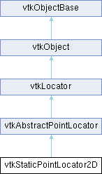

|
Etrek
|
|
Etrek
|
quickly locate points in 2-space More...
#include <vtkStaticPointLocator2D.h>

Public Member Functions | |
| vtkIdType | FindClosestPoint (const double x[3]) override |
| void | FindClosestNPoints (int N, const double x[3], vtkIdList *result) override |
| void | FindPointsWithinRadius (double R, const double x[3], vtkIdList *result) override |
| int | IntersectWithLine (double a0[3], double a1[3], double tol, double &t, double lineX[3], double ptX[3], vtkIdType &ptId) |
| void | MergePoints (double tol, vtkIdType *mergeMap) |
| vtkIdType | GetNumberOfPointsInBucket (vtkIdType bNum) |
| void | GetBucketIds (vtkIdType bNum, vtkIdList *bList) |
| bool | GetLargeIds () |
| void | GenerateRepresentation (int level, vtkPolyData *pd) override |
| void | FindClosestNPoints (int N, double x, double y, double z, vtkIdList *result) |
| vtkIdType | FindClosestPoint (double x, double y, double z) |
| void | FindPointsWithinRadius (double R, double x, double y, double z, vtkIdList *result) |
| virtual double * | GetBounds () |
| vtkTypeMacro (vtkStaticPointLocator2D, vtkAbstractPointLocator) | |
| void | PrintSelf (ostream &os, vtkIndent indent) override |
| vtkSetClampMacro (NumberOfPointsPerBucket, int, 1, VTK_INT_MAX) | |
| vtkGetMacro (NumberOfPointsPerBucket, int) | |
| vtkSetVector2Macro (Divisions, int) | |
| vtkGetVectorMacro (Divisions, int, 2) | |
| vtkIdType | FindClosestPointWithinRadius (double radius, const double x[3], double &dist2) override |
| virtual vtkIdType | FindClosestPointWithinRadius (double radius, const double x[3], double inputDataLength, double &dist2) |
| double | FindCloseNBoundedPoints (int N, const double x[3], vtkIdList *result) |
| void | Initialize () override |
| void | FreeSearchStructure () override |
| void | BuildLocator () override |
| void | ForceBuildLocator () override |
| vtkSetClampMacro (MaxNumberOfBuckets, vtkIdType, 1000, VTK_ID_MAX) | |
| vtkGetMacro (MaxNumberOfBuckets, vtkIdType) | |
| void | GetBounds (double *bounds) override |
| virtual double * | GetSpacing () |
| virtual void | GetSpacing (double spacing[3]) |
| void | GetBucketIndices (const double *x, int ij[2]) const |
| vtkIdType | GetBucketIndex (const double *x) const |
| Public Member Functions inherited from vtkAbstractPointLocator | |
| vtkTypeMacro (vtkAbstractPointLocator, vtkLocator) | |
| vtkIdType | FindClosestPoint (double x, double y, double z) |
| void | FindClosestNPoints (int N, double x, double y, double z, vtkIdList *result) |
| void | FindPointsWithinRadius (double R, double x, double y, double z, vtkIdList *result) |
| vtkGetMacro (NumberOfBuckets, vtkIdType) | |
| Public Member Functions inherited from vtkLocator | |
| virtual void | Update () |
| vtkTypeMacro (vtkLocator, vtkObject) | |
| virtual void | SetDataSet (vtkDataSet *) |
| vtkGetObjectMacro (DataSet, vtkDataSet) | |
| vtkSetClampMacro (MaxLevel, int, 0, VTK_INT_MAX) | |
| vtkGetMacro (MaxLevel, int) | |
| vtkGetMacro (Level, int) | |
| vtkSetMacro (Automatic, vtkTypeBool) | |
| vtkGetMacro (Automatic, vtkTypeBool) | |
| vtkBooleanMacro (Automatic, vtkTypeBool) | |
| vtkSetClampMacro (Tolerance, double, 0.0, VTK_DOUBLE_MAX) | |
| vtkGetMacro (Tolerance, double) | |
| vtkSetMacro (UseExistingSearchStructure, vtkTypeBool) | |
| vtkGetMacro (UseExistingSearchStructure, vtkTypeBool) | |
| vtkBooleanMacro (UseExistingSearchStructure, vtkTypeBool) | |
| vtkGetMacro (BuildTime, vtkMTimeType) | |
| bool | UsesGarbageCollector () const override |
| Public Member Functions inherited from vtkObject | |
| vtkBaseTypeMacro (vtkObject, vtkObjectBase) | |
| virtual void | DebugOn () |
| virtual void | DebugOff () |
| bool | GetDebug () |
| void | SetDebug (bool debugFlag) |
| virtual void | Modified () |
| virtual vtkMTimeType | GetMTime () |
| void | RemoveObserver (unsigned long tag) |
| void | RemoveObservers (unsigned long event) |
| void | RemoveObservers (const char *event) |
| void | RemoveAllObservers () |
| vtkTypeBool | HasObserver (unsigned long event) |
| vtkTypeBool | HasObserver (const char *event) |
| vtkTypeBool | InvokeEvent (unsigned long event) |
| vtkTypeBool | InvokeEvent (const char *event) |
| std::string | GetObjectDescription () const override |
| unsigned long | AddObserver (unsigned long event, vtkCommand *, float priority=0.0f) |
| unsigned long | AddObserver (const char *event, vtkCommand *, float priority=0.0f) |
| vtkCommand * | GetCommand (unsigned long tag) |
| void | RemoveObserver (vtkCommand *) |
| void | RemoveObservers (unsigned long event, vtkCommand *) |
| void | RemoveObservers (const char *event, vtkCommand *) |
| vtkTypeBool | HasObserver (unsigned long event, vtkCommand *) |
| vtkTypeBool | HasObserver (const char *event, vtkCommand *) |
| template<class U, class T> | |
| unsigned long | AddObserver (unsigned long event, U observer, void(T::*callback)(), float priority=0.0f) |
| template<class U, class T> | |
| unsigned long | AddObserver (unsigned long event, U observer, void(T::*callback)(vtkObject *, unsigned long, void *), float priority=0.0f) |
| template<class U, class T> | |
| unsigned long | AddObserver (unsigned long event, U observer, bool(T::*callback)(vtkObject *, unsigned long, void *), float priority=0.0f) |
| vtkTypeBool | InvokeEvent (unsigned long event, void *callData) |
| vtkTypeBool | InvokeEvent (const char *event, void *callData) |
| virtual void | SetObjectName (const std::string &objectName) |
| virtual std::string | GetObjectName () const |
| Public Member Functions inherited from vtkObjectBase | |
| const char * | GetClassName () const |
| virtual vtkTypeBool | IsA (const char *name) |
| virtual vtkIdType | GetNumberOfGenerationsFromBase (const char *name) |
| virtual void | Delete () |
| virtual void | FastDelete () |
| void | InitializeObjectBase () |
| void | Print (ostream &os) |
| void | Register (vtkObjectBase *o) |
| virtual void | UnRegister (vtkObjectBase *o) |
| int | GetReferenceCount () |
| void | SetReferenceCount (int) |
| bool | GetIsInMemkind () const |
| virtual void | PrintHeader (ostream &os, vtkIndent indent) |
| virtual void | PrintTrailer (ostream &os, vtkIndent indent) |
Static Public Member Functions | |
| static vtkStaticPointLocator2D * | New () |
| Static Public Member Functions inherited from vtkObject | |
| static vtkObject * | New () |
| static void | BreakOnError () |
| static void | SetGlobalWarningDisplay (vtkTypeBool val) |
| static void | GlobalWarningDisplayOn () |
| static void | GlobalWarningDisplayOff () |
| static vtkTypeBool | GetGlobalWarningDisplay () |
| Static Public Member Functions inherited from vtkObjectBase | |
| static vtkTypeBool | IsTypeOf (const char *name) |
| static vtkIdType | GetNumberOfGenerationsFromBaseType (const char *name) |
| static vtkObjectBase * | New () |
| static void | SetMemkindDirectory (const char *directoryname) |
| static bool | GetUsingMemkind () |
Protected Member Functions | |
| void | BuildLocatorInternal () override |
| Protected Member Functions inherited from vtkLocator | |
| void | ReportReferences (vtkGarbageCollector *) override |
| Protected Member Functions inherited from vtkObject | |
| void | RegisterInternal (vtkObjectBase *, vtkTypeBool check) override |
| void | UnRegisterInternal (vtkObjectBase *, vtkTypeBool check) override |
| void | InternalGrabFocus (vtkCommand *mouseEvents, vtkCommand *keypressEvents=nullptr) |
| void | InternalReleaseFocus () |
| Protected Member Functions inherited from vtkObjectBase | |
| vtkObjectBase (const vtkObjectBase &) | |
| void | operator= (const vtkObjectBase &) |
Protected Attributes | |
| int | NumberOfPointsPerBucket |
| int | Divisions [2] |
| double | H [2] |
| vtkBucketList2D * | Buckets |
| vtkIdType | MaxNumberOfBuckets |
| bool | LargeIds |
| Protected Attributes inherited from vtkAbstractPointLocator | |
| double | Bounds [6] |
| vtkIdType | NumberOfBuckets |
| Protected Attributes inherited from vtkLocator | |
| vtkDataSet * | DataSet |
| vtkTypeBool | UseExistingSearchStructure |
| vtkTypeBool | Automatic |
| double | Tolerance |
| int | MaxLevel |
| int | Level |
| vtkTimeStamp | BuildTime |
| Protected Attributes inherited from vtkObject | |
| bool | Debug |
| vtkTimeStamp | MTime |
| vtkSubjectHelper * | SubjectHelper |
| std::string | ObjectName |
| Protected Attributes inherited from vtkObjectBase | |
| std::atomic< int32_t > | ReferenceCount |
| vtkWeakPointerBase ** | WeakPointers |
Additional Inherited Members | |
| Static Protected Member Functions inherited from vtkObjectBase | |
| static vtkMallocingFunction | GetCurrentMallocFunction () |
| static vtkReallocingFunction | GetCurrentReallocFunction () |
| static vtkFreeingFunction | GetCurrentFreeFunction () |
| static vtkFreeingFunction | GetAlternateFreeFunction () |
quickly locate points in 2-space
vtkStaticPointLocator2D is a spatial search object to quickly locate points in 2D. vtkStaticPointLocator2D works by dividing a specified region of space into a regular array of rectilinear buckets, and then keeping a list of points that lie in each bucket. Typical operation involves giving a position in 2D and finding the closest point; or finding the N closest points. (Note that the more general vtkStaticPointLocator is available for 3D operations.) Other specialized methods for 2D have also been provided.
vtkStaticPointLocator2D is an accelerated version of vtkPointLocator. It is threaded (via vtkSMPTools), and supports one-time static construction (i.e., incremental point insertion is not supported). If you need to incrementally insert points, use the vtkPointLocator or its kin to do so.
Note that to satisfy the superclass's API, methods often assume a 3D point is provided. However, only the x,y values are used for processing. The z-value is only used to define location of the 2D plane.
|
overridevirtual |
Build the locator from the input dataset. This will NOT do anything if UseExistingSearchStructure is on.
Implements vtkLocator.
|
overrideprotectedvirtual |
This function is not pure virtual to maintain backwards compatibility.
Reimplemented from vtkLocator.
| double vtkStaticPointLocator2D::FindCloseNBoundedPoints | ( | int | N, |
| const double | x[3], | ||
| vtkIdList * | result ) |
Special method for 2D operations (e.g., vtkVoronoi2D). The method returns the approximate number of points requested, returning the radius R of the furthest point, with the guarantee that all points are included that are closer than <=R.
|
overridevirtual |
Find the closest N points to a position. This returns the closest N points to a position. A faster method could be created that returned N close points to a position, but necessarily the exact N closest. The returned points are sorted from closest to farthest. These methods are thread safe if BuildLocator() is directly or indirectly called from a single thread first.
Implements vtkAbstractPointLocator.
|
overridevirtual |
Given a position x, return the id of the point closest to it. An alternative method (defined in the superclass) requires separate x-y-z values. These methods are thread safe if BuildLocator() is directly or indirectly called from a single thread first. (Note in the 2D locator the z-value is ignored.)
Implements vtkAbstractPointLocator.
|
overridevirtual |
Given a position x and a radius r, return the id of the point closest to the point within that radius. These methods are thread safe if BuildLocator() is directly or indirectly called from a single thread first. dist2 returns the squared distance to the point. Note that if multiple points are located the same distance away, the actual point returned is a function in which order the points are processed (i.e., indeterminate).
Implements vtkAbstractPointLocator.
|
overridevirtual |
Find all points within a specified radius R of position x. The result is not sorted in any specific manner. These methods are thread safe if BuildLocator() is directly or indirectly called from a single thread first.
Implements vtkAbstractPointLocator.
|
overridevirtual |
Build the locator from the input dataset (even if UseExistingSearchStructure is on).
This function is not pure virtual to maintain backwards compatibility.
Reimplemented from vtkLocator.
|
overridevirtual |
Free the memory required for the spatial data structure.
Implements vtkLocator.
|
overridevirtual |
Populate a polydata with the faces of the bins that potentially contain cells. Note that the level parameter has no effect on this method as there is no hierarchy built (i.e., uniform binning). Typically this is used for debugging.
Implements vtkLocator.
|
inlinevirtual |
Provide an accessor to the bounds. Valid after the locator is built.
Reimplemented from vtkAbstractPointLocator.
|
inlineoverridevirtual |
Provide an accessor to the bounds. Valid after the locator is built.
Reimplemented from vtkAbstractPointLocator.
| void vtkStaticPointLocator2D::GetBucketIds | ( | vtkIdType | bNum, |
| vtkIdList * | bList ) |
| void vtkStaticPointLocator2D::GetBucketIndices | ( | const double * | x, |
| int | ij[2] ) const |
Given a point x[3], return the locator index (i,j) which contains the point. This method is meant to be fast, so error checking is not performed. This method should only be called after the locator is built.
|
inline |
Inform the user as to whether large ids are being used. This flag only has meaning after the locator has been built. Large ids are used when the number of binned points, or the number of bins, is >= the maximum number of buckets (specified by the user). Note that LargeIds are only available on 64-bit architectures.
| vtkIdType vtkStaticPointLocator2D::GetNumberOfPointsInBucket | ( | vtkIdType | bNum | ) |
Given a bucket number bNum between 0 <= bNum < this->GetNumberOfBuckets(), return the number of points found in the bucket. Note that a bucket can also be specified with locator indices (i,j) which converts to a the bucket number bNum=i+this->Divisions[0]*j.
|
inlinevirtual |
Provide an accessor to the bucket spacing. Valid after the locator is built.
|
overridevirtual |
See vtkLocator and vtkAbstractPointLocator interface documentation. These methods are not thread safe.
Reimplemented from vtkLocator.
| int vtkStaticPointLocator2D::IntersectWithLine | ( | double | a0[3], |
| double | a1[3], | ||
| double | tol, | ||
| double & | t, | ||
| double | lineX[3], | ||
| double | ptX[3], | ||
| vtkIdType & | ptId ) |
Intersect the points contained in the locator with the line defined by (a0,a1). Return the point within the tolerance tol that is closest to a0 (tol measured in the world coordinate system). If an intersection occurs (i.e., the method returns nonzero), then the parametric location along the line t, the closest position along the line lineX, and the coordinates of the picked ptId is returned in ptX. (This method is thread safe after the locator is built.)
| void vtkStaticPointLocator2D::MergePoints | ( | double | tol, |
| vtkIdType * | mergeMap ) |
Merge points in the locator given a tolerance. Return a merge map which represents the mapping of "concident" point ids to a single point. Note the number of points in the merge map is the number of points the locator was built with. The user is expected to pass in an allocated mergeMap.
|
static |
Construct with automatic computation of divisions, averaging 5 points per bucket.
|
overridevirtual |
Methods invoked by print to print information about the object including superclasses. Typically not called by the user (use Print() instead) but used in the hierarchical print process to combine the output of several classes.
Reimplemented from vtkAbstractPointLocator.
| vtkStaticPointLocator2D::vtkSetClampMacro | ( | MaxNumberOfBuckets | , |
| vtkIdType | , | ||
| 1000 | , | ||
| VTK_ID_MAX | ) |
Set the maximum number of buckets in the locator. By default the value is set to VTK_INT_MAX. Note that there are significant performance implications at work here. If the number of buckets is set very large (meaning > VTK_INT_MAX) then internal sorting may be performed using 64-bit integers (which is much slower than using a 32-bit int). Of course, memory requirements may dramatically increase as well. It is recommended that the default value be used; but for extremely large data it may be desired to create a locator with an exceptionally large number of buckets. Note also that during initialization of the locator if the MaxNumberOfBuckets threshold is exceeded, the Divisions are scaled down in such a way as not to exceed the MaxNumberOfBuckets proportionally to the size of the bounding box in the x-y-z directions.
| vtkStaticPointLocator2D::vtkSetClampMacro | ( | NumberOfPointsPerBucket | , |
| int | , | ||
| 1 | , | ||
| VTK_INT_MAX | ) |
Specify the average number of points in each bucket. This data member is used in conjunction with the Automatic data member (if enabled) to determine the number of locator x-y divisions.
| vtkStaticPointLocator2D::vtkSetVector2Macro | ( | Divisions | , |
| int | ) |
Set the number of divisions in x-y directions. If the Automatic data member is enabled, the Divisions are set according to the NumberOfPointsPerBucket and MaxNumberOfBuckets data members. The number of divisions must be >= 1 in each direction.
| vtkStaticPointLocator2D::vtkTypeMacro | ( | vtkStaticPointLocator2D | , |
| vtkAbstractPointLocator | ) |
Standard type and print methods.